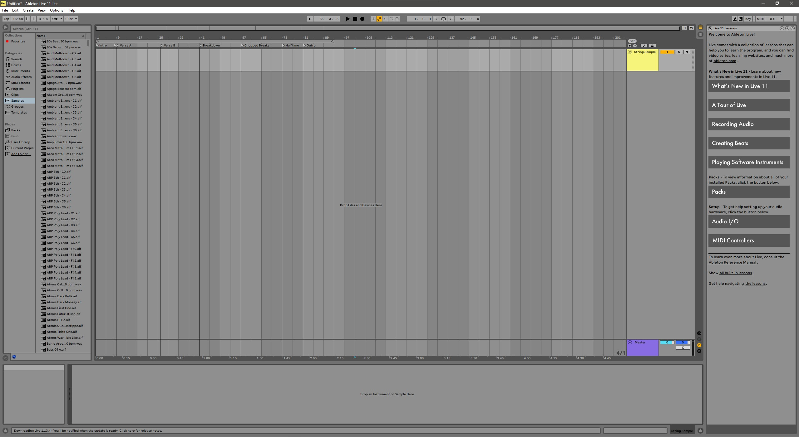
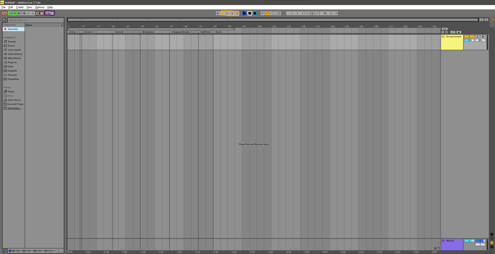
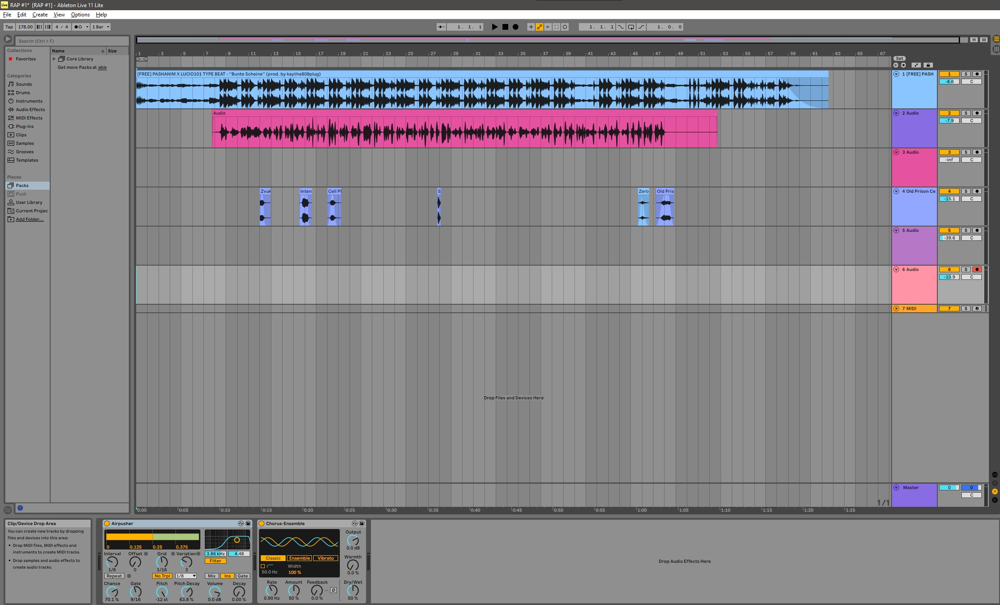

Izgled programa
Na spodnji sliki lahko vidite kako izgleda program. Res morda izgleda, kot, da moraš imeti veliko znanja da ga znaš uporabljati, vendar za ustvarjanje preproste glasbe je čisto preprost za uporabo. Ima zelo veliko funkcij.
Funkcije
Določanje BPM - beats per minute oz. določimo lahko tempo
Tu imamo izpis BPM - beats per minute
Metronom v Ableton Live 11 Lite, kot v vsaki digitalni ali analogni glasbeni platformi, služi kot orodje za vodenje tempa. Pomaga glasbenikom, da ohranjajo ritem in sočasnost pri snemanju ali izvajanju glasbe
Kvantizacija omogoča glasbenikom in producentom, da avtomatično poravnajo note ali udarce na bližnje časovne točke določene časovne mreže, kar pomaga pri izboljšanju ritmične natančnosti in doslednosti posnetkov.
Označuje točno lokacijo, kjer se nahajate v skladbi. To je še posebej pomembno za urejanje in fina nastavitev glasbenih delov, kot so vstavljanje efektov, prerezi ali spremembe v avtomatizaciji.
Ključen element uporabniškega vmesnika, ki omogoča zagon in nadzor predvajanja vaših projektov.
Ključni element v transportnem kontrolnem delu, ki omogoča takojšnje ustavljanje vsega predvajanja in snemanja.
Ta gumb je ključen za začetek snemanja avdio
Dokončan projekt
Na spodnji sliki lahko vidite dokončan projekt. v prvi svetlo modri vrstici lahko vidite narejeno melodijo, ki se predvaja v ozadju, v drugi vrstici lahko vidite zvok, ki sem ga posnel in v zadnji vrstici lahko vidite sound efekte, ki sem jih dodal, da je glasba bolj zanimiva.
